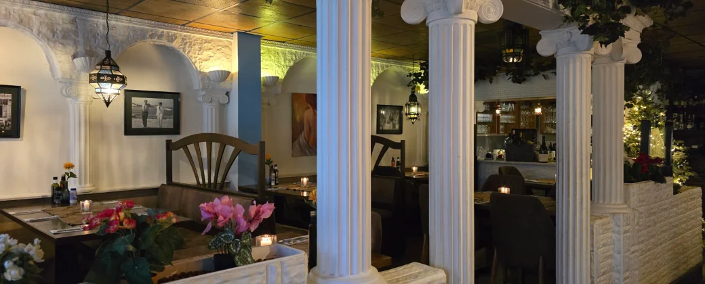
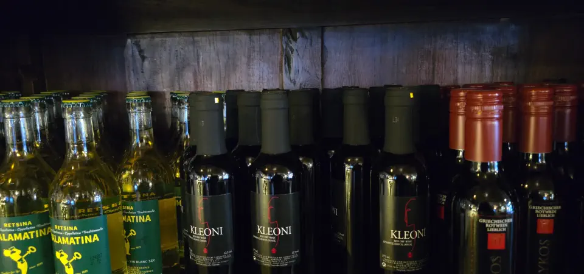

Gastvrijheid
Uw gastheer Stelios ontvangt u met Griekse gastvrijheid. Samen met zijn team zorgt hij voor een warm welkom.
Grieks restaurant in Rosmalen
Vers bereide traditionele Griekse gerechten, met een bijzondere inspiratie vanuit Kreta. Echte Griekse gastvrijheid, service en kwaliteit die u verdient.

U waant zich in een zeer gezellige en gastvrije sfeer van Griekenland als u bij restaurant De Griek binnenstapt.
Uw gastheer Stelios ontvangt u met Griekse gastvrijheid. Samen met zijn team zorgt hij voor een warm welkom.
Met vers bereide traditionele Griekse gerechten en een klantvriendelijke bediening zorgen wij dat u op en top kunt genieten.
Griekenland staat voor genieten: van goed eten, mooie gesprekken en vooral samen aan tafel zijn. Onze gerechten zijn gebaseerd op authentieke Griekse recepten, met een bijzondere inspiratie vanuit Kreta. De mediterrane keuken staat centraal: puur, smaakvol en met liefde bereid.
Of u nu kiest voor vlees, vis of een vegetarisch gerecht, op onze kaart vindt u volop smaken die u even meenemen naar de Griekse zon.
Alle gerechten met hun vaste nummer, zoals op de kaart in het restaurant.
In onze producten kunnen verschillende soorten allergenen aanwezig zijn. Heeft u een vraag over de samenstelling van een gerecht? Wij helpen u graag.

Griekse wijnen van Kreta tot Noord-Griekenland, per fles, per glas of per karaf. En natuurlijk ouzo, Metaxa en een Zeus coffee na het eten.
Bestellen doet u telefonisch: bel 073 521 24 84 en noem het nummer van het gerecht.
Afhaaltijden elke dag van 16:30 tot 20:30 uur. Alle schotels worden geserveerd met frites, rijst en tzatziki.

Met trots presenteren wij onze eigen olijfolie, afkomstig van onze gaard op Kreta. Een eerlijk en puur product, met de rijke smaak zoals u die alleen daar vindt. Informeer bij ons personeel naar de prijzen.
De feestdagen zijn het perfecte moment om samen te genieten van heerlijk eten, gezelligheid en natuurlijk de warme Griekse sfeer. Wilt u de feestdagen met familie, vrienden of uw geliefden bij De Griek vieren? Wacht dan niet te lang met reserveren, want de tafels zijn snel gevuld.
Reserveer: 073 521 24 84We zijn regelmatig op zoek naar enthousiaste parttime en fulltime medewerkers voor diverse functies. Uren zijn flexibel en in overleg. Ervaring in de horeca is een pluspunt, maar we staan ook open voor gemotiveerde kandidaten zonder ervaring.
vacatures@degriekrosmalen.nlNeem telefonisch contact met ons op, ook voor feestjes, bijzondere wensen of grotere gezelschappen. Wij bespreken de mogelijkheden graag met u.
Bel 073 521 24 84Maandag t/m zondag
16:30 tot 22:00 uur
Afhalen: 16:30 tot 20:30 uur
Restaurant De Griek
Rodenborchweg 35
5241 VN Rosmalen
info@degriekrosmalen.nl
(niet voor reserveringen)
U kunt gratis voor de deur parkeren. Is daar geen plaats meer, dan kunt u terecht op de parkeerplaats aan de Torenstraat.
Het lekkerste cadeau om te geven en te krijgen. Dinerbonnen zijn verkrijgbaar voor elk gewenst bedrag en dagelijks te koop in het restaurant. Alleen te verzilveren bij De Griek in Rosmalen.